Code 17 -- Key Signature -- parameter structure |
P1 code number (17)
P2 staff number
P3 horizontal position
P4 vertical position (generally,
should not be altered).
P5 number of accidentals in key
signature
P6 type of clef preceding the key
signature
P7 amount of space between the accidentals
P8-13, 16, 17 irregular key signatures
P14 ignore Lineup and Justify
P15 horizontal displacement
P18 extended numbers/letters
P25
P26
P5 indicates
the number of accidentals in the key signature.
If P5 is a positive number, the key signature is sharps. If P5 is
negative, flats.
Note: adding 100 to P5 changes the accidentals to naturals in the
pattern of sharps. Adding -100 to P5 changes the accidentals to
naturals in the pattern of flats.
P6 indicates the
type of clef preceding the key signature. The
following clefs may be specified in P6:
P6= Clef Type
0 = Treble 1 = Bass 2 = Alto 3 = Tenor
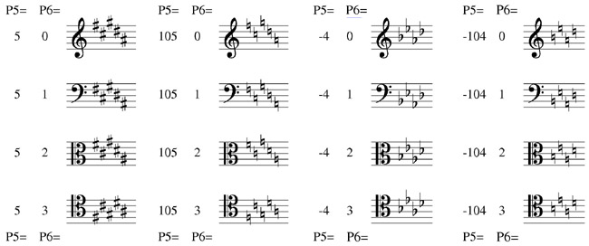
|
It is imperative that you use P6 correctly. SCORE's transpose feature will not function correctly unless the key signature's P6 is set properly. It is very easy (in the course of editing) to select a key signature and displace it vertically (altering P4). This will invalidate the key signature for any subsequent transpositions to the staff. Accordingly, we must stress the importance of setting P6 and avoiding alterations of P4. |
If you add 100 to P6, the accidentals in the key signature change to "cue" size.
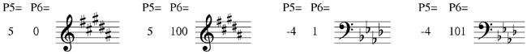
Toolbar buttons:
= add a
flat
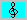
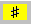 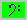
= add a natural
P7 indicates the amount of space between the accidentals in the key signature.
The default value is 1. If P7 = .8, the accidentals are closer together;
P7 = 1.2, they are farther apart.
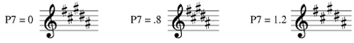
Toolbar buttons:
= add space = reduce space = normal space
Creating Unorthodox Key Signatures
Be careful when creating unusual key signatures that you do not transpose the staff
with the TR command. The TR command examines the line for a key signature and
makes its adjustments accordingly
Also, if you alter P4 of a key signature, SCORE will not be able to transpose the staff correctly.
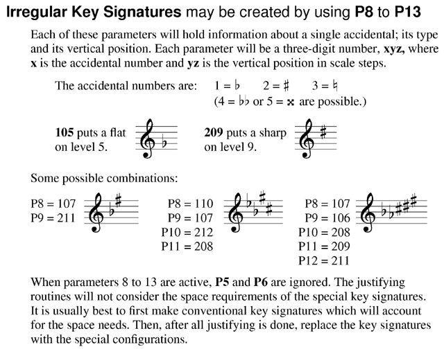
Toolbar buttons (2nd level):
= add 1st accidental
= add 2nd, etc. 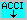 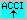
= clear all added accidentals
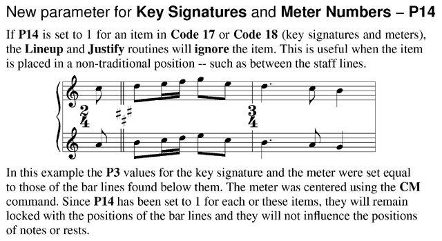
Toolbar buttons:
= turn off justifying (P14=1) = restore justifying (P14=0)
= center on barline (CM) 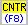
P15 horizontal displacement
Toolbar buttons:
= offset .5
to left 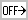
P25 layer number.
See Color Control.
P26 color/gray value.
See Color Control.
___________________________________________________________________________
----- Shortcut Letter Commands --------------------------
>>> Offsets
OFM = offset minus, moves item .5 step to left. (P15)
OFP = offset plus, moves item .5 step to right.
NOF = no offset of item -- P15 = 0.
Function Key Setup for Code 17
| F1 Help |
F2 Back to Previous Item |
F3 Forward to Next Item |
F4 Back to Previous Item, Same Code # |
F5 Forward to Next Item, Same Code # |
F6 . . . |
| F7 |
F8 Center |
F9 Exit from Edit Mode ( X ) |
F10 . . . |
F11 Delete, Move to Previous, Same Code # |
F12 Delete, Move to Next, Same Code # |